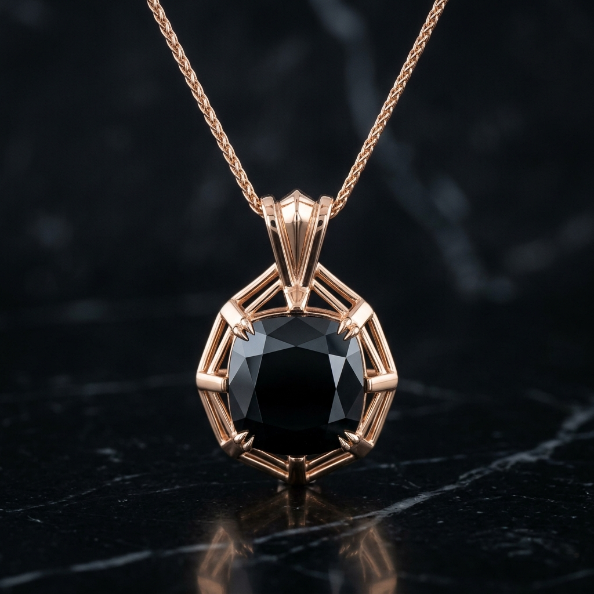
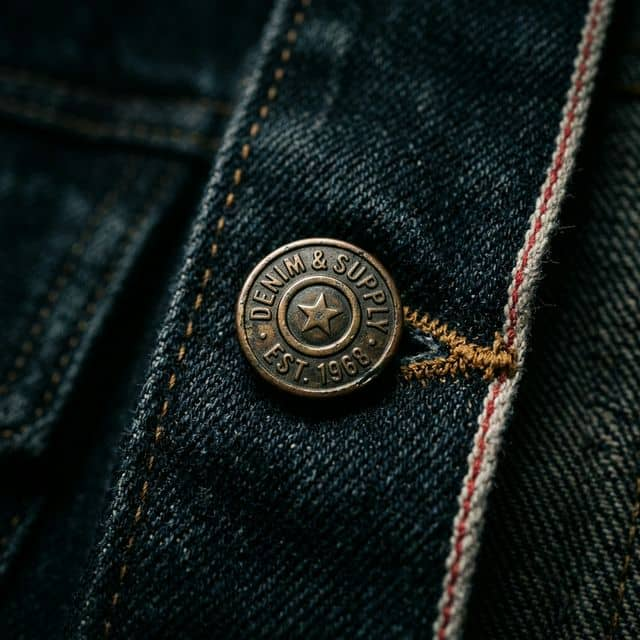
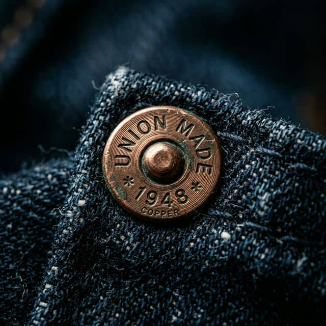
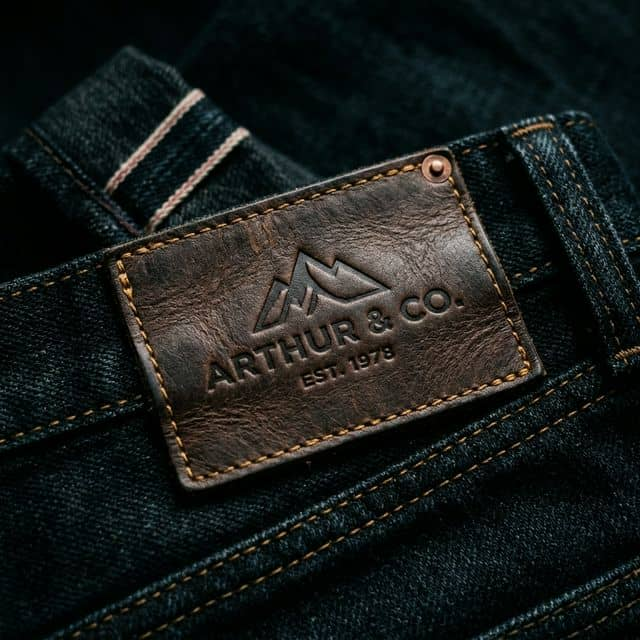
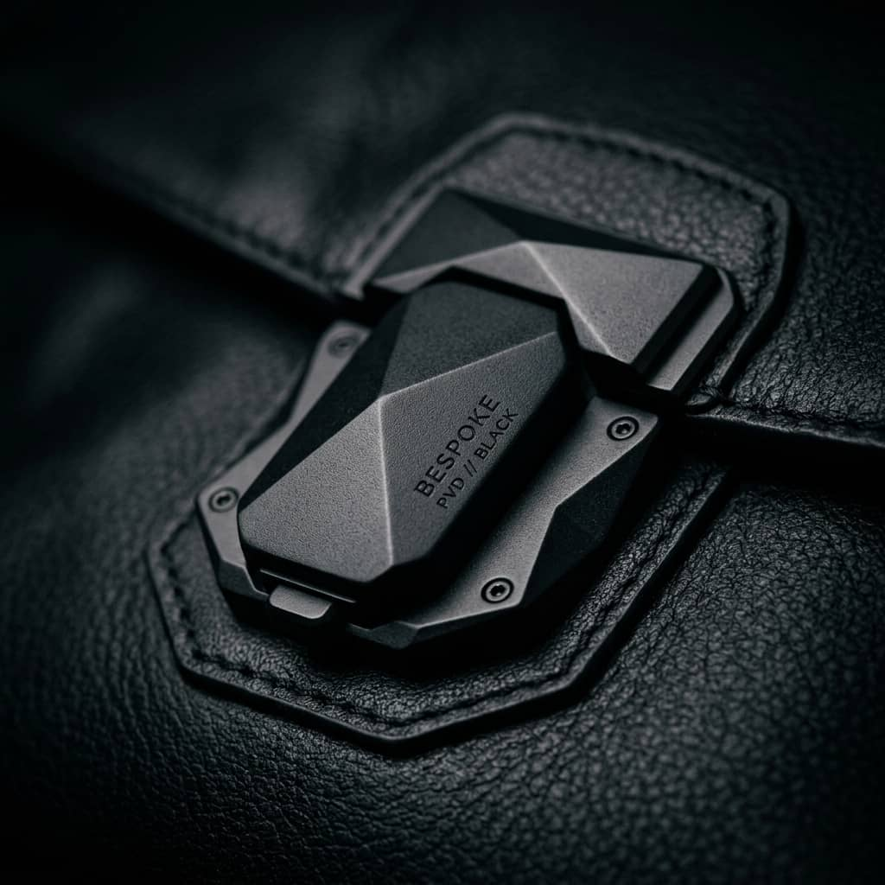
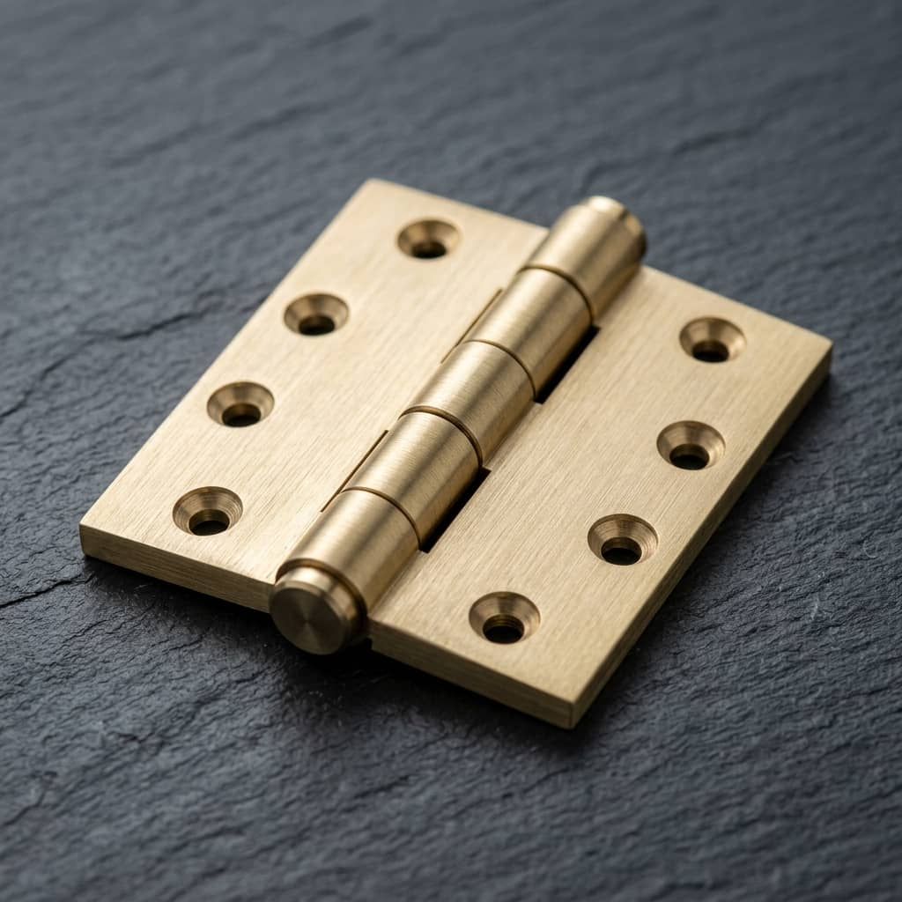
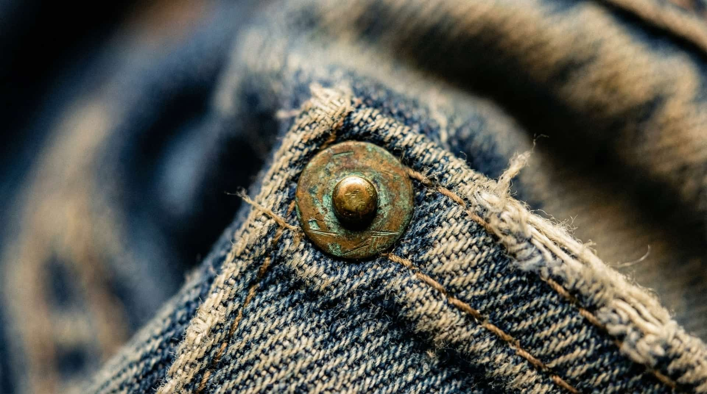

S.D.A.P.
Bespoke Metalworks — Est. 2007 Denim · Bags · Cigars · Fine Jewelry
Supplying the world’s most demanding labels since 2007

Tack Buttons & Shanks
Aerospace-grade zinc alloys & PVD Anti-oxidation
Detachable Monomaterial Framework
Unlike traditional electroplated rivets, our new line of Tack Buttons feature a detachable mono-material framework designed explicitly for the circular economy. The button can be unscrewed via a proprietary micro-thread, allowing the denim to be fully recycled without the need to cut out the hardware.
Molecular PVD Bonding & Hybrid Alloys
Our buttons are engineered for heavy-duty denim weights exceeding 16oz. We utilize High-Vacuum PVD (Physical Vapor Deposition), establishing a near-indestructible anti-oxidation barrier. This process bonds the finish at a molecular level, providing a Vickers Hardness (HV) rating 10x superior to standard electroplating. The base substrates consist of Zamak 5 die-castings for complex branding and H65 Brass for heritage-grade structural integrity.
- Substrate Zamak 5 (Die-Cast) / H65 Brass (Forged)
- Hardness Profile 2500–3000 HV (PVD Molecular Coating)
- Surface Durability ASTM B117 - 120h High-Vaccum Pass
- Wash Resistance Industrial Stone-Wash & Enzyme (50+ Cycles)
- Tensile Strength >850 N (Reinforced Shank Core)
- Certification Oeko-Tex Standard 100 Class I
- Precision ±0.01 mm High-Tolerance Tooling
- Surface Option Soft-Touch TPU/TPE Overmould (Skin-Safe)
- Overmould Thickness ±0.02 mm Precision Bond Tolerance
Soft-Touch Rubber Overmoulding — Skin-Grade Haptics
For labels demanding a premium tactile identity, we offer a full TPU / TPE Rubber Overmoulding process applied directly to the exposed button face. The result is a velvety, skin-feeling surface indistinguishable from the premium soft-touch found in luxury consumer electronics — zero cold metallic contact, pure warmth on touch. The rubber layer is precision-moulded at ±0.02 mm thickness tolerance, ensuring a flush, bubble-free bond to the metal substrate beneath. Available in matte black, stone grey, bone white, and fully custom bespoke RAL colorways. Certified skin-safe to GB/T 17592 and OEKO-TEX® Standard 100.
A: High-end labels are redesigning garments for "End-of-Life" (EOL) circularity. Screw-on/screw-off hardware is becoming mandatory so denim can be shredded and recycled instantly.
A: No. Unlike paint or standard electroplating, PVD is molecularly bonded to the alloy lattice, making it impervious to industrial stone-washing and standard chipping.
A: Yes. Our TPU/TPE Rubber Overmoulding wraps the exposed face in a skin-grade, velvety rubber finish — the same tactile technology used in luxury consumer electronics. It is warm to touch, completely matte, wash-stable across 50+ industrial cycles, and available in any bespoke RAL colorway.
A: Yes. We offer a micro-engraved QR code on the underside shank that links to a digital product passport — providing end consumers and recyclers with full material composition, origin, and end-of-life instructions. This is rapidly becoming a compliance requirement for EU textile regulations post-2026.

CNC-Milled Burrs & Rivets
5-Axis CNC Milling & Structural Enforcement
Cold-Forged H65 Brass Integrity & Ductility
Our rivets are cold-forged from premium H65 Structural Brass, ensuring a dense molecular structure that resists deformation under extreme pocket-load stress. This specific alloy offers a 35% Elongation Index, allowing for a perfect mushroomed seal without micro-fracturing. Each burr is high-vacuum PVD coated or chemically passivated to achieve ISO 9227 Accelerated Salt Spray benchmarks (96+ hours), ensuring heritage-grade patina without structural decay.
- Core Material Pure H65 Brass / T1 Red Copper
- Ductility Index 35% Elongation (ASTM E8)
- Manufacture Hardened Stamping & Cold Forging
- Monogramming 5-Axis CNC Micro-Milling (±0.005mm)
- Anti-Oxidation ISO 9227 Salt Spray (96h Pass)
- Load Rating >850 N (Reinforced Pocket-Stay)
- Size Range 8 mm / 9.5 mm / 10 mm
A: Premium denim purists are demanding "Living Patinas"—completely unsealed raw copper that drastically oxidizes and ages alongside the fading indigo of the jeans.
A: Yes. We engineer extended post lengths specifically structured to pierce and lock 21oz to 25oz super-heavyweight Japanese selvedge denim reliably.

Structural Identifiers
Laser Etched Jacron & Vulcanized Leather
Sustainable Jacron & Vegan Bio-Polymers
Our structural identifiers utilize high-density Cellulose Jacron and Mycelium (Mushroom) Leathers, offering a high-performance vegan alternative with zero visual compromise. The fibers are vulcanized at high pressure to ensure permanent tear resistance, even after repetitive industrial enzyme baths. We utilize non-toxic, bio-based adhesives for seamless garment integration.
- Substrates Jacron Cellulose / Vulcanized Cork / Mycelium
- Thermal Stability Resistant up to 210°C (Steam/Iron Safe)
- Embossing Logic 100-Ton Hydraulic Cold-Press
- Tear Resistance ISO 3377-2 High-Tensile Rating
- Print Precision Micro-Fiber Laser Etching (Resolution >600 DPI)
- Thickness Delta 0.8 mm – 3.0 mm Custom Skiving
- Wash Integrity Zero Color Migration / Dimensionally Stable
A: High-end streetwear and luxury labels are moving fully away from animal hides towards Mycelium (mushroom leather) and post-consumer recycled cellulose blends with zero sacrifice to visual fidelity.
A: Yes. Because our etching is guided by 5-axis robotics, we can increment serial numbers or alter data on every single individual patch during a production batch.

High-End Bag Hardware
Precision Milled Clasps & Heavy-Duty Zippers
Ergonomic Kinematics & Surface Hardness
Standardized on AISI 316L Stainless Steel and HP Solid Brass, our bag hardware is designed for the high-end mobility of modern luxury. We utilize High-Vacuum Sputtering (PVD) to achieve a Vickers Hardness (HV) of 450+, establishing a near-indestructible ceramic barrier. Our finishes are benchmarked against **ASTM B117 Neutral Salt Spray** (120 Hours) and **ISO 4524 Adhesion standards** to prevent environmental pitting and micro-striation.
- Base Alloys AISI 316L Stainless / HP Brass / Grade 5 Titanium
- Surface Hardness 450-600 HV (PVD Molecular Bond)
- Salt Spray Rating ASTM B117 - 120 Hours (Grade 10)
- Abrasion Resistance 15x superior to standard electroplating
- Load Rating >1500 N Tensile Strength per Clasp
- Acoustic Logic Tuned Internal Damping (Silent Operation)
- Size Precision Micron-calibrated friction fits (±0.005mm)
A: We are seeing a massive shift towards architecturally complex geometric closures using lightweight, eco-friendly Titanium alloys rather than dense steel.
A: Yes. The PVD lattice passes 48-hour continuous salt-spray tests, maintaining physical integrity in marine-environment luxury applications.

Cigar & Humidor Precision
Precise Hermetic Hinges & Custom Lock Escutcheons
Precision 6061 Forged Milling
Our bespoke humidor hinges and locks are CNC-milled from solid blocks of 6061-T6 Aerospace Aluminum or H65 HP Brass. Machined to absolute tolerances of ±0.005", these components provide the structural rigidity required for permanent seal integrity. We utilize Fluorocarbon (Viton) gaskets to ensure a controlled air-exchange rate without VOC off-gassing, protecting the organic profile of the tobacco.
- Substrate Aerospace 6061-T6 Aluminum / H65 HP Brass
- Machining High-Precision CNC (±0.005mm Tolerance)
- Friction Index 0.04μ (Teflon-Infused Pivot)
- Gasket Material Medical-Grade Silicone / Viton Gaskets
- Seal Tension Calibrated Hermetic Micro-Climate Compression
- Surface Integrity Passivated Type II Anodization / PVD Gold
- Acoustic Metric Damped "Luxury-Thud" Closing Logic
A: High-net-worth clients prefer stealth-wealth aesthetics. Brushed rhodium and matte gold with subtle carbon-fiber inlays have overtaken high-gloss finishes entirely.
A: Not at all. We utilize pure brass free of VOC-off-gassing coatings, preventing any disruption to the organic aroma of the cedar wood.

Fine Jewelry Metalworks
Abstract Geometry & Micro-Faceting Technology
Platinum 950 Ductility & Vickers Calibrations
Our fine jewelry metalworks utilize Platinum 950 for structural prongs, choosing its superior ductility (Vickers ~125 HV) to securely cradle high-value stones against impact without snapping. For high-rigidity pavé bands, we utilize HP-Finished 18k Gold (HV ~220) to prevent band ovaling. Every surface is finished using Zaratsu blade-polishing for distortion-free reflection indices.
- Metals Platinum 950 / 18k Palladium-White / 18k Yellow Gold
- Prong Engineering Dual-Axis Claws / Soft-Paws Seating
- Setting Logic Microscope-Guided Pavé (Sub-Micron Precision)
- Hardness Index Calibrated 125–230 HV (Substrate Specific)
- Finish Tech Hand-Laid 0.5-Micron PVD / Zaratsu Mirror Polish
- Stone Security 4-Point Prongs with Reinforced Galleries
- Precision Gap ±0.005mm Algorithmic Faceting
A: Hybrid components. The marriage of ultra-precision CNC milled titanium frameworks paired with ethically sourced, lab-grown secondary stone integrations is highly sought after by progressive couture labels.
A: Absolutely. All raw metal materials are conflict-free and adhere strictly to global ethical sourcing guidelines.

Global Hardware Partnerships
Established in 2007, S.D.A.P. has served as the silent engineering backbone for over 15 years — collaborating with leading European high-street fashion giants and premier Swiss-engineered motorracing leaders at global industrial scale.